Órtesis
¿Qué es una Órtesis?
Órtesis Tobillo-Pie/"Ankle Foot Orthoses (AFOs)"

Son un tipo de aparato ortopédico que puede servir para diversas funciones. Dependiendo de lo que necesite una persona, un AFO puede ayudarla a mejorar la posición de su pie y tobillo, a ayudar en la ambulación, a aumentar su rango de movimiento, o incluso a veces a proteger una cirugía o lesión. Esta imagen de la izquierda es un Dafo 3.5.
-
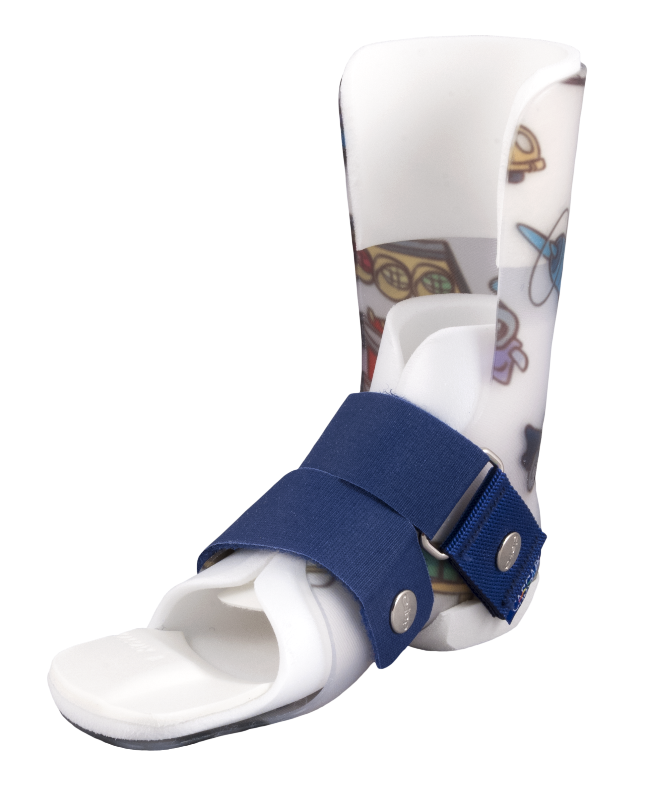
Dafo 3 Softy
-
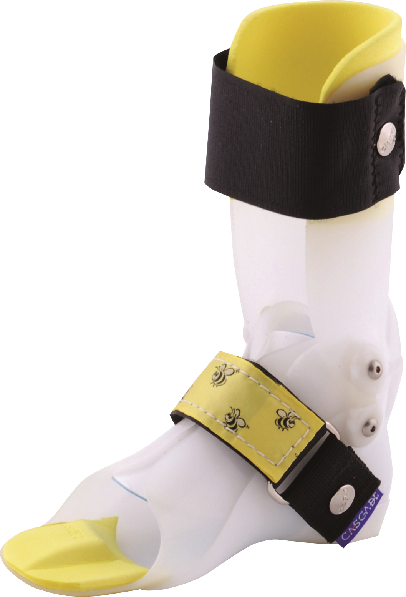
Dafo Tami 2
-

Fuzion AFO del Orthomerica
-

Ultraflex AFO
-
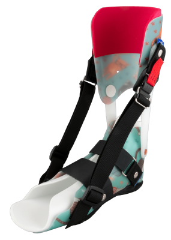
Dafo 9
-

"Noodle" del Kinetic Research
-

Estilo "Phat" del
Bio Mechanical Composites
Images in this section are provided courtesy of Cascade Dafo, Orthomerica, UltraFlex, Kinetic Research, and Bio Mechanical Composites.
-
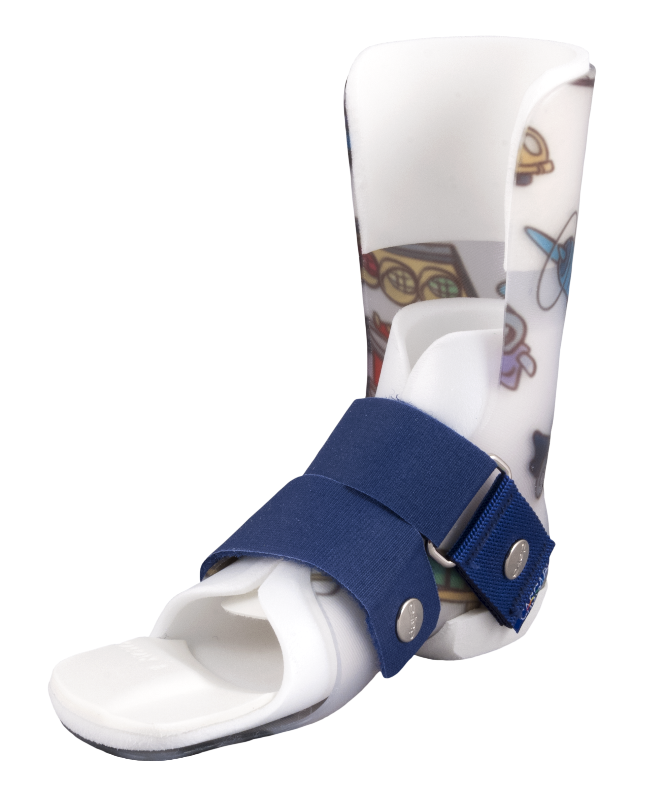
Órtesis de remodelación craneal "Cranial Remolding Orthoses"

Las órtesis de remodelación craneal (a las que casualmente se llama cascos, ¡pero asegúrate de ser específico si hablas con un médico!) se utilizan a veces para ayudar a los bebés a tener la cabeza redonda, sobre todo si tienen un punto plano o si han sufrido una intervención quirúrgica especial. La imagen de la izquierda muestra la Orthomerica Starband. Hemos incluido fotos en la sección de abajo de Bling Your Band. Bling Your Band es una empresa divertida que ofrece calcomanías y arte para decorar las órtesis de remodelación craneal.
-

Starband del Orthomerica
-

Bling Your Band
Donut Design -
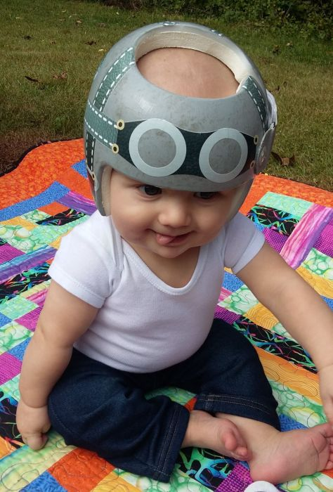
Bling Your Band
Vintage Goggles Gray Design
Images provided courtesy of Orthomerica and Bling Your Band.
-
Knee Ankle Foot Orthoses (KAFOs)

Knee Ankle Foot Orthoses, also known as KAFOs can help people to walk or stand, protect from injuries, or can influence the range of motion. For example, a KAFO could help someone stop their knee from going in a direction it's not supposed to, or depending on the style it could help them move their knee more in the right direction. The image on the left is a KAFO from Cascade Dafo.
-

Dafo Kafo
-
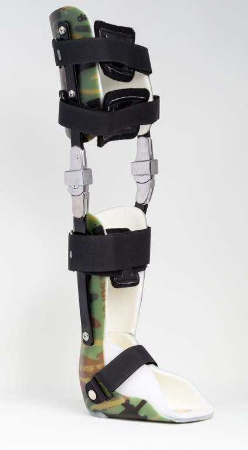
Surestep
-

Ultra Flex KAFO
Images in this section provided courtesy of Bio Mechanical Composites, Cascade Dafo, Surestep, and UltraFlex
-
Supramalleolar Orthoses (SMOs)

Supramalleolar Orthoses (SMOs) provide a bit of support to the foot. The pair on the left here are SureStep ToeWalking SMOs. They can be helpful for people that toe-walk, have down syndrome, or for supplying a bit of support to stop the foot from moving in ways it's not supposed to.
-
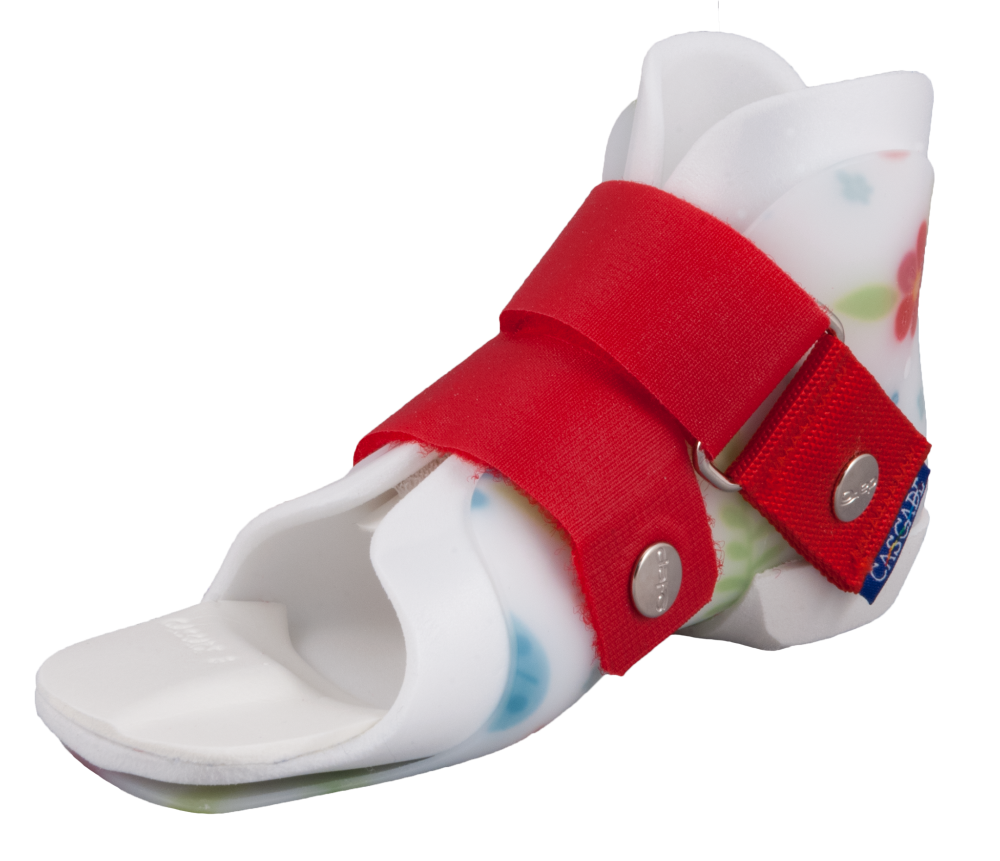
Dafo SMO 4 Softy
-
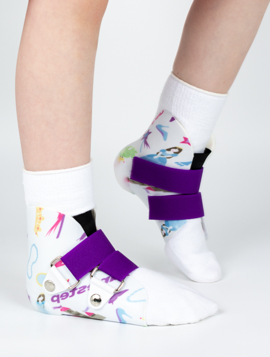
Surestep SMO
-
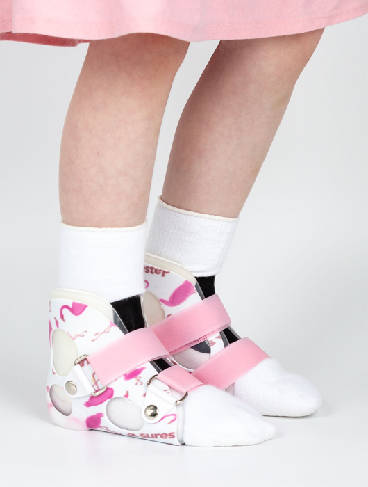
Big Shot SMO from Surestep
Images in this section provided courtesy of Cascade Dafo and Surestep.
-
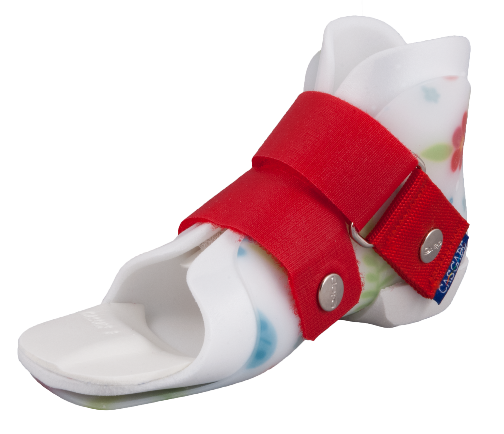
Thoraco-Lumbar-Sacral Orthoses (TLSOs)

Thoraco-Lumbar-Sacral Orthoses are called TLSOs. Their name refers to the different parts of the back that the brace touches. These can be used for a variety of reasons. Generally, they help to improve spinal alignment. They can be helpful for reducing scoliosis, lordosis, kyphosis, or to help a patient sit upright if they don't have a lot of muscle control. The image on the left is of a TLSO from Surestep.
-

This is something
-
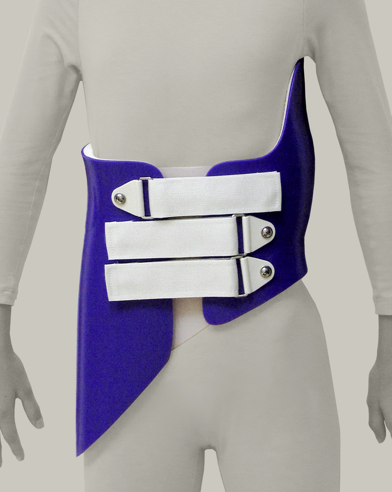
Providence Double Curve TLSO from Spinal Technologies
-
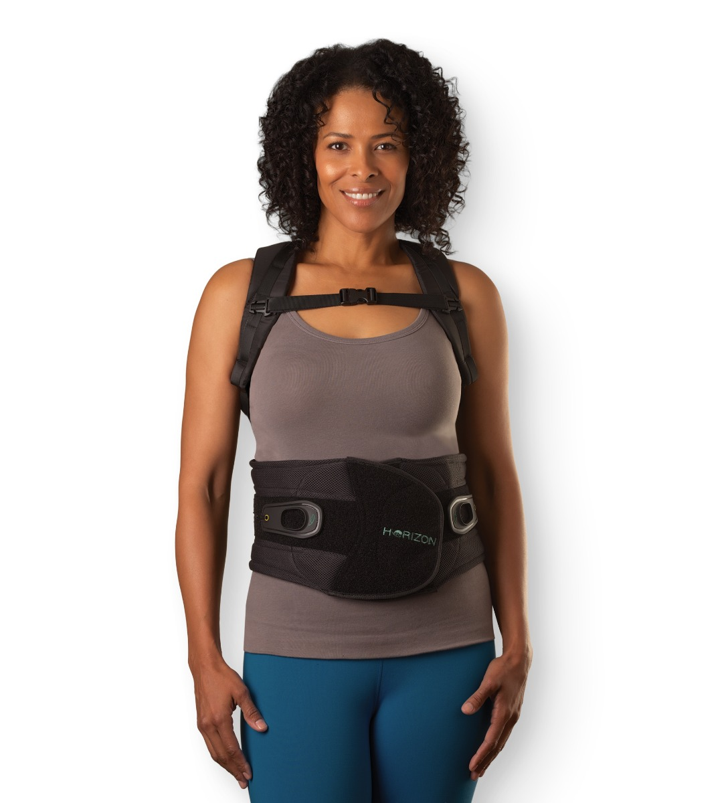
Horizon Style TLSO from
Aspen Medical Products -
Photos in this section provided courtesy of Surestep, Spinal Technologies, and Aspen Medical Products.
-
Shoe Recommendations
It can be a challenge to find the right footwear. We've compiled a few of our favourite shoe resources below. If you are in need of a shoe lift, please click here to view our "Approved Shoe Lift Choices" , or you can text us to find out if your shoe of choice is eligible for a lift by our team.
-
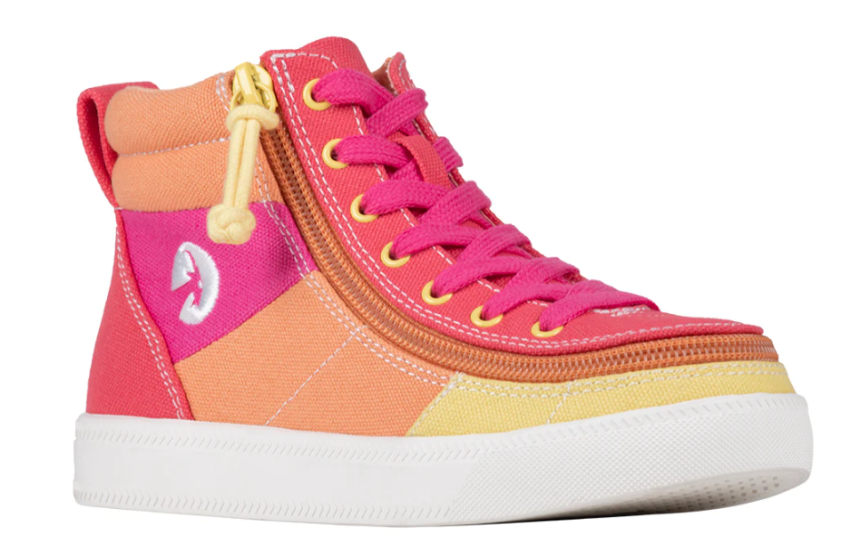
Billy Footwear has shoes with zippers for easier wear
-
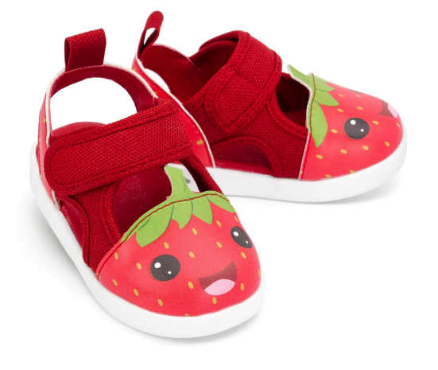
Ikiki Shoes have squeakers in the heel to help kids put their heels down.
-

BignWideShoes.com has shoes in wider sizes for extra foot space.
-
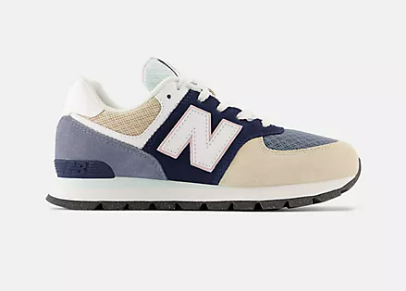
NewBalance has many designs that are compatible with shoe lifts.
-
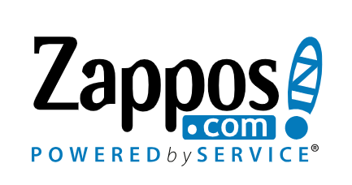
Zappos has a lot of affordable options for footwear from many different brands.
-
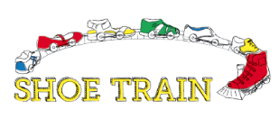
Shoe Train, in Potomac Maryland, has an excellent physical location where they will help to fit unusual sizes and interesting feet. They will also sell one shoe or mismatched sizes if needed.
-

Orthofeet carries a variety of shoes that are thoughtfully designed for an ergonomic fit.
-
Dr. Comfort sells more traditional orthopedic shoes to suit a variety of needs.
-
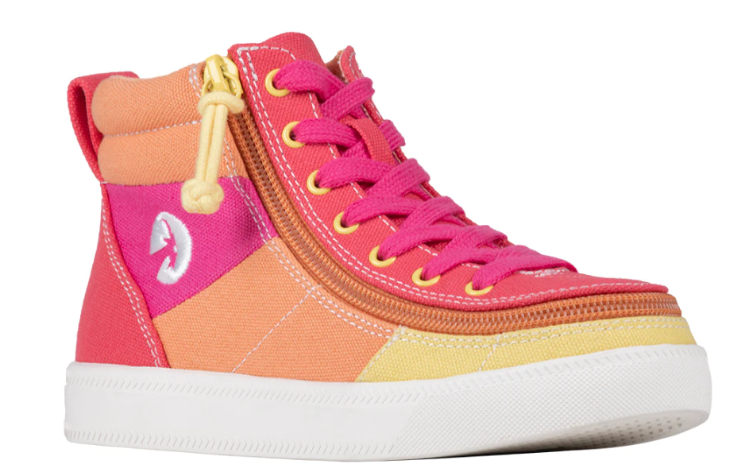